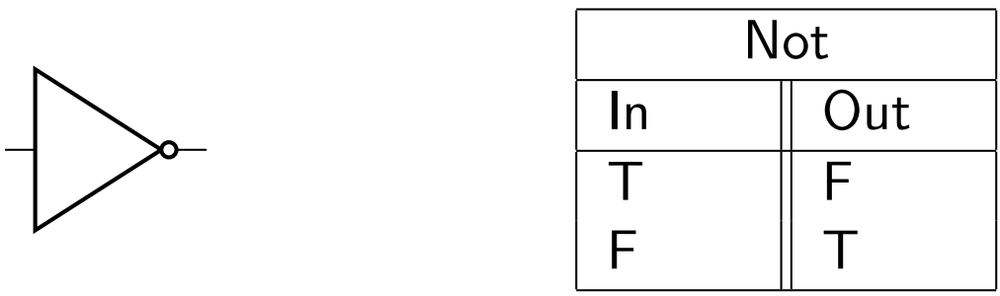

The NOT gate is the simplest gate, which is why we'll be taking a look at it first.
In principle, it's simple. Whatever goes into a NOT gate, the opposite of that will come out. In other words, this gate will invert the input.
Here is what we'd be looking at in terms of logical schematics and a truth table. If you don't recognize either of the below formats, I'd suggest a quick review of Discrete Math.
Here's how the design would look in Minecraft. Remember, the red wool signifies input, while the blue wool signifies output. See the Introduction section for a review on our in-textbook demos.